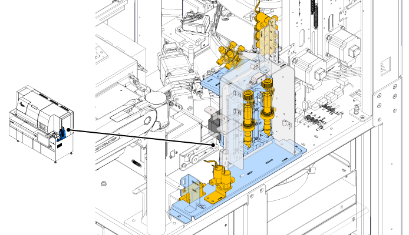
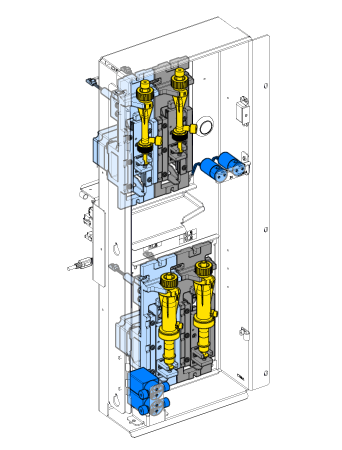
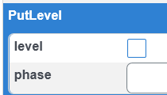

Troubleshooting Fluidics Valves
This topic includes information about how to troubleshoot fluidics valves.
Note: Do not clean valves. Replace them.
| Table of Contents |
|---|
| About Fluidics Valves |
| Fluidics Valve Locations |
| Component Symptoms and Common Causes |
| Troubleshooting Fluidics Valves |
About Fluidics Valves
There are two types of dispense/aspirate probe valves:
- Reagent pipettor probe and supply valves
- Precision sample pipettor three-way valves
| Valve Position | Direction |
|---|---|
| In | Toward the syringe |
| Out | Away from the syringe |
Fluidics Valve Locations


Component Symptoms and Common Causes
| Component | Symptoms | Common Cause |
|---|---|---|
| Reagent pipettor valve |
|
Cables between pumps or valves were swapped during preventative maintenance or part replacement. |
| Wash wheel |
|
Inconsistent volume dispensed at the wash wheel. See Troubleshooting the WDF Wash Wheel Fluidics Error (Low Pressure) Flag for more information. |
| Precision sample pipettor three-way valve | Level sense failures | Valve is stuck open. |
Troubleshooting Fluidics Valves
Perform this procedure to troubleshoot fluidics valves.
Note: Be sure the relevant valves are closed.
- If you are testing reagent pipettor fluidics, be sure both the supply and probe valves are closed.
- If you are testing wash dispense fluidics, be sure both the aspirate and dispense valves are closed.
- Visually inspect the valve.
Observation Check After dispense, droplets form on the probe tip Valves or connections Uneven dispense and many bubbles in the fluid Valves and syringes for leaks - In the Machine Control App, select the fluidics subsystem and pump.
- Enter a step count of -10 for MoveRelative and execute.
- Observe the syringe pump.
- Strong valves will not allow the syringe pump to move.
- Weak valves will allow fluid to flow into the syringe and will allow the syringe to move.
- Test using the Machine Control App or the Service App.
- Go to the subsystem, assembly, and valve (e.g. go to ).
- On the Action tab select
PutLevel.

Select level.
Select Execute to open the valve. You should hear an audible click.
- If the valve closes weakly, replace the valve.
- If there is no valve movement, inspect the electrical connections between the valve and the board.
- Perform volume checks.
- Select the component (e.g. RP1).
- Enter 200uL. Run 10 reps. Select Chase for Reagent Pipettor Execution option.
- In-Sight Explorer > spreadsheet view > wash wheel camera.
- Start operation and return to In-Sight Explorer to watch wash buffer dispense.
Note: UI will always indicate failure. This is a known issue.
- If you observe inconsistent dispense volumes in In-Sight Explorer (e.g. 140 to 200 uL), take the following actions:
- Inspect the fittings and tubing from the syringe to the valve to the probe.
- Verify the alignments for component.
- Replace the valve.